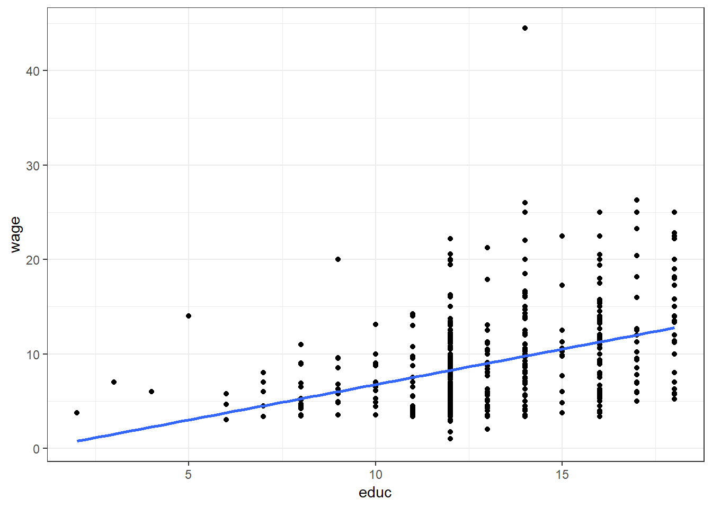
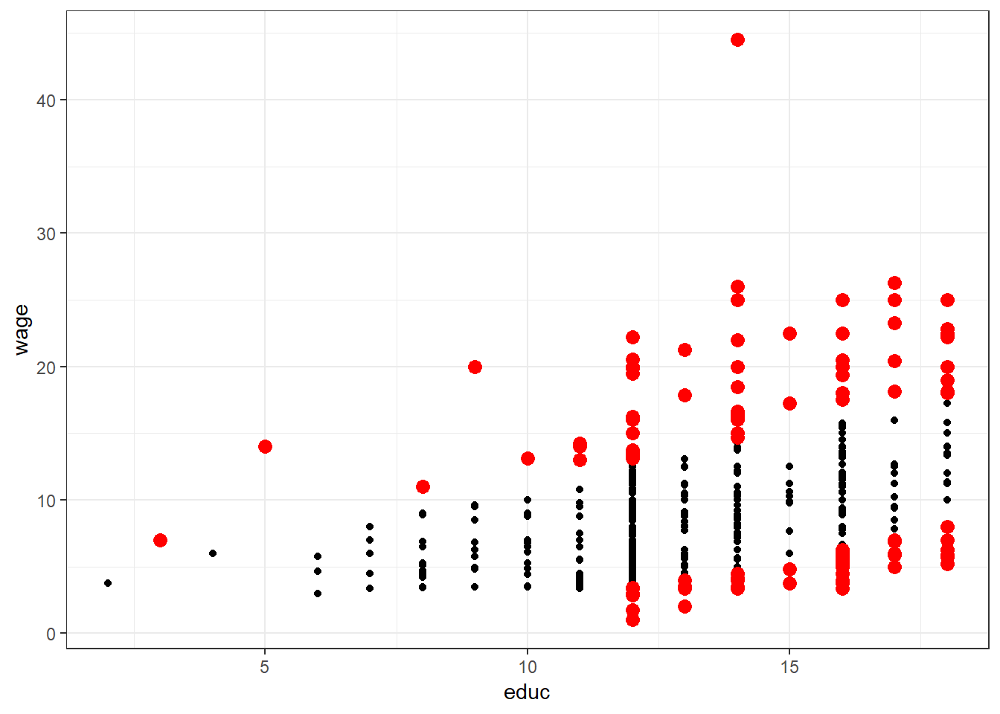

Einfache Regression
Will man bei der Korrelationsanalyse den Zusammenhang von Variablen beschreiben, versucht man in der Regressionsanalyse eine Variable mittels einer linearen Funktion durch eine (oder mehrere) andere Variablen zur erklären. Nichts desto trotz sind Korrelation und Regression sehr eng miteinander verknüpft.
Der Begriff Regression tauchte erstmalig 1877 in einer von Sir Francis Galton abgefassten wissenschaftlichen Studie auf. In einer späteren Studie über die Körpergröße von Vätern und deren Söhnen wendete er den Gedanken der Regressionsanalyse erneut an.
Er fand heraus, dass Söhne sehr großer (kleiner) Väter zwar groß (klein), aber etwas kleiner (größer) sind als diese. Die Körpergröße entwickelt sich somit immer wieder in Richtung des Durchschnitts zurück. Als Engländer bezeichnete Galton diesen Prozess als Regression6.
Zwischen der Körpergröße der Söhne und der Väter besteht somit ein Zusammenhang, dessen Stärke mit Hilfe der Korrelation ausgedrückt werden könnte. Im Unterschied zur Korrelationsanalyse unterstellt man bei der Regressionsanalyse jedoch sehr oft auch die kausale Richtung des Zusammenhangs:
Die Körpergröße der Söhne ist abhängig von der Körpergröße des Vaters und nicht umgekehrt.
Entsprechend bezeichnete Galton:
- die Größe der Söhne als abhängige Variable (dependent variable, DV) und
- die Größe der Väter als unabhängige Variable (independent variable, IV).
Häufig werden die Variable die vorhergesagt werden soll bei der Regression Kriterium (\(y_i\))und die Variable(n) die für die Vorhersage eingesetzt wird/werden Prädiktor(n) (\(x_{1i}\))7 genannt. Anhand des Prädiktors wird demzufolge das Kriterium vorhergesagt.
Der Schluss, dass die Regression die Kausalität von Zusammenhängen beweist, ist damit allerdings nicht (immer) erlaubt. Die Kausalität (Wirkungsrichtung) muss zuvor theoretisch abgeleitet werden, bevor sie empirisch (mit Hilfe der Regression) bewiesen werden kann. So ist die Richtung der Kausalität bei Fragen wie:
- ist es das Alter des Bräutigams, welches das Alter der Braut bestimmt, oder umgekehrt?
- beeinflusst sich das Alter der verheirateten Paare gar gegenseitig?
nicht zu bestimmen. Manchmal ist die Kausalität jedoch sehr offensichtlich:
- der Blutdruck hat keinen Einfluss auf das Alter, sondern das Alter hat einen Einfluss auf den Blutdruck.
- die Körpergröße hat einen Einfluss auf das Körpergewicht, aber umgekehrt lässt sich dieser Zusammenhang wohl theoretisch kaum herleiten.
- mit Zunahme des \(CO_2\) Gehaltes in der Atmosphäre steigt die durchschnittliche Temperatur, eine umgekehrte Wirkungsrichtung ist aber auszuschließen (da hätten wir in südlichen Ländern ein kleines Problem!).
Die Regression ermöglicht jedenfalls unter bestimmten Umständen8 gute, bzw. bestmögliche Vorhersage für eine Variable. Folgernd aus dem eben gesagten, sollte nochmals klargestellt werden, dass im Gegensatz zur Korrelation festgelegt werden muss, welche Variable durch eine andere Variable vorhergesagt werden soll.
Definitionen
Die formale Definition eines einfachen linearen Modells ist:
\[\begin{equation} y_i = b_0 + b_1 \cdot x_{1i} + \varepsilon_i \tag{8} \end{equation}\]Die wesentlichen Parameter dieses einfachen Modells sind:
- Konstanter Term (intercept) \(b_0\): jener Wert den \(y_i\) einnimmt, wenn \(x_{1i} = 0\) ist.
- Steigung (slope) \(b_1\): die Zunahme von \(y_i\), wenn \(x_{1i}\) sich um eine Einheit erhöht.
Des Weiteren berücksichtigt dieses Modell auch einen Fehler (\(\varepsilon_i\)). Damit kommt auch ein ganz zentraler Teil bei der Modellbildung zum Ausdruck. Die meisten Modelle definieren sich also aus:
\[\begin{equation} \textrm{wahrer Wert} = \textrm{Modell} + \textrm{Fehler} \tag{9} \end{equation}\]Daraus lässt sich auch folgende Erkenntnis bezüglich des Modells direkt ableiten:
- Je kleiner die Summe der Fehler sind, desto besser ist das Modell.
- Je genauer das Modell, desto kleiner wird auch der Fehler sein.
Mit dieser Erkenntnis wird auch klar, dass i.A. ein ganz einfaches Modell (mit einem einzigen Prädiktor) nur zu einer bedingten Reduktion des Fehlers geeignet ist. Wir werden uns im weiteren Verlauf mit erweiterten Modellen beschäftigen, wollen aber zunächst die Eigenschaften des einfachen linearen Modells näher betrachten. Im folgenden Link findet man eine gute Veranschaulichung des einfachen linearen Modells.
Betrachtet man das Modell isoliert (also ohne Fehlerterm), ist folgende Schreibweise üblich:
\[\begin{equation} \hat{y}_i = b_0 + b_1 \cdot x_{1i} \tag{10} \end{equation}\]Berechnung der Koeffizienten
Für die Berechnung der Koeffizienten wird das Kriterium der kleinste Quadrate (MLS) angewandet. Einfach ausgedrückt wird eine Gerade durch die beobachteten Daten gesucht, die folgenden Eigenschaften aufweist:
- die Summe der quadratischen Abstände jeder Beobachtung zum entsprechenden Punkt auf der Geraden ist ein Minimum, also \(\sum_{i=1}^{N} \varepsilon_i^2 = min\).
- es gibt keine andere Gerade die eine kleinere Summe dieser Fehler liefert.
Die Berechnung der Parameter entspricht daher einer Extremwertaufgabe, d.h. die partiellen Ableitungen werden auf Null gesetzt. Daraus lassen sich dann die Parameter \(b_0, b_1\) berechnent. Details dazu siehe Wikipedia.
Modellanwendung
Zur Anwendung eines einfachen linearen Modell betrachten wir wiederum die bereits bekannten Daten aus dem Datensatz CPS85. Diese Mal wollen wir das Gehalt (wage) durch die Ausbildungsdauer (educ in Jahren) vorhersagen. Formal lautet das Modell demnach:
\[\begin{equation} \hat{\textrm{wage}} = b_0 + b_1 \cdot \textrm{educ} \tag{11} \end{equation}\]Die Werte der Parameter \(b_0, b_1\) können für dieses Beispiel entsprechend der obigen Erläuterung folgendermaßen interpretiert werden:
- Für eine Person mit keiner Ausbildung (\(\textrm{wage} = x_{1i} = 0\)) wird durch das Modell ein Einkommen \(y_i = b_0\) vorhergesagt.
- Erhöht man die Ausbildungsdauer \(x_{1i}\) um ein Jahr, steigt der Gehalt \(y_i\) um das \(b_1\)-fache an.
Kopiere zur Veranschaulichung folgenden Code in dein R-Script und führe diesen aus.
DF <- CPS85
ggplot(CPS85, aes(x = educ, y = wage)) +
geom_point() +
geom_smooth(method=lm, se=FALSE) +
theme_bw()
model_1 <- lm(wage ~ educ, data = CPS85)
pander(summary(model_1))| Estimate | Std. Error | t value | Pr(>|t|) | |
|---|---|---|---|---|
| (Intercept) | -0.746 | 1.045 | -0.7135 | 0.4758 |
| educ | 0.7505 | 0.07873 | 9.532 | 5.474e-20 |
| Observations | Residual Std. Error | \(R^2\) | Adjusted \(R^2\) |
|---|---|---|---|
| 534 | 4.754 | 0.1459 | 0.1443 |
Die in der Tabelle angegebenen Werte der Spalte Estimate entsprechen dabei den Parametern \(b_0, b_1\) des Modells. Eine weitere wesentliche Kennzahl für die Interpretation des Modells ist der Spalte \(R^2\) zu entnehmen. Dieser Wert wird als Determinationskoeffizient9 bezeichnet. Umgerechnet in % (im vorliegenden Beispiel also 14.43%) besagt der Wert, wie viel der Variablität des Gehaltes durch den Prädiktor Ausbilung erklärt wird. Wir werden im weiteren Verlauf noch öfter auf diesen Kennwert zurückkommen.
Welche Gehälter würden für Ausbildungszeiten zwischen 10 und 14 Jahren vorhergesagt werden? Kopiere folgenden Code in dein R-Script und führe diesen aus. Änder auch den Wertebereich der Prädiktoren und beobachte was dabei passiert!
Im Vergleich zum Mittelwert-Modell zeigt sich mit steigender Ausbildung ein höheres Einkommen. Der Fehler bei der Vorhersage des Einkommens wird sich daher durch diese Modellvorstellung verringern (mehr zur Abschätzung der Fehlerreduktion später).
Aufgabe SLR 1
Öffne ein neues R-Script und kopiere die bereits bekannte Kopfzeile in diese Datei. Speichere anschließend das Skript unter dem Namen SLR_Aufgabe1.R. Bearbeite nun folgende Aufgabenstellungen:
- Lade die Datei “Album Sales 1.dat”
- erstelle ein einfaches Streudiagramm mit Sales auf der x- und adverts auf der y-Achse.
- erstelle ein einfaches lineares Modell zur Vorhersage der Verkaufszahlen (sales) durch die Variable adverts.
- Wie stark korrelliert der Prädiktor mit dem Kriterium?
- Wie viel Varianz wird vom Kriterium durch den Prädiktor aufgeklärt?
- Ist das erstellte Modell signifikant besser, als dan Null-Modell?
- Welchen Wert würde das Modell für Werbeausgaben = 100 vorhersagen?
Residualanalyse
Ein zentrales Thema der Modellbildung ist die Beurteilung und (statistische) Auswertung der Abweichungen des Modells von den Beobachtungen (Fehler, Residum). Folgende Kennwerte bilden die Möglichkeit, die Güte des Modells abzuschätzen:
- Vorhergesagte Werte: vorhergesagte Werte der Regressionsgleichung (= Werte die auf der Geraden liegen).
- Nicht standardisiert: der Wert, den das Modell für die abhängige Variable vorhersagt.
- Standardisiert: \(z\)-Transformierte vorhergesagte Werte.
- Korrigiert: der vorhergesagte Wert für einen Fall, wenn dieser Fall von der Berechnung der Regressionskoeffizienten ausgeschlossen ist.
- Standardfehler des Mittelwerts: Standardfehler der vorhergesagten Werte. Ein Schätzwert der Standardabweichung des Durchschnittswertes der abhängigen Variablen für die Fälle, die dieselben Werte für die unabhängigen Variablen haben.
- Residuen: tatsächliche Wert der abhängigen Variablen minus des vorhergesagten Werts aus der Regressionsgleichung.
- Nicht standardisiert: Die Differenz zwischen einem beobachteten Wert und dem durch das Modell vorhergesagten Wert.
- Standardisiert: Der Quotient aus dem Residuum und einer Schätzung seiner Standardabweichung. Standardisierte Residuen, auch bekannt als Pearson-Residuen, haben einen Mittelwert von 0 und eine Standardabweichung von 1.
- Studentisiert: Ein Residuum, das durch seine geschätzte Standardabweichung geteilt wird, die je nach der Distanz zwischen den Werten der unabhängigen Variablen des Falles und dem Mittelwert der unabhängigen Variablen von Fall zu Fall variiert.
- Ausgeschlossen: Das Residuum für einen Fall, wenn dieser Fall nicht in die Berechnung der Regressionskoeffizienten eingegangen ist. Dies ist die Differenz zwischen dem Wert der abhängigen Variablen und dem korrigierten Schätzwert.
- Studentisiert und ausgeschlossen: Der Quotient aus dem ausgeschlossenen Residuum eines Falles und seinem Standardfehler. Die Differenz zwischen einem studentisierten ausgeschlossenen Residuum und dem zugehörigen studentisierten Residuum gibt an, welchen Unterschied die Entfernung eines Falles für dessen eigene Vorhersage bewirkt.
- Distanzen: Maße zum Auffinden von Fällen mit ungewöhnlichen Wertekombinationen bei den unabhängigen Variablen und von Fällen, die einen großen Einfluss auf das Modell haben könnten.
- Mahalanobis: Dieses Maß gibt an, wie weit die Werte der unabhängigen Variablen eines Falls vom Mittelwert aller Fälle abweichen. Eine große Mahalanobis-Distanz charakterisiert einen Fall, der bei einer oder mehreren unabhängigen Variablen Extremwerte besitzt.
- Cook: Ein Maß dafür, wie stark sich die Residuen aller Fälle ändern würden, wenn ein spezieller Fall von der Berechnung der Regressionskoeffizienten ausgeschlossen würde. Ein großer Wert der Cook-Distanz zeigt an, dass der Ausschluss eines Falles von der Berechnung der Regressionskoeffizienten die Koeffizienten substanziell verändert.
- Hebelwerte: Werte, die den Einfluss eines Punktes auf die Anpassung der Regression messen. Der zentrierte Wert für die Hebelwirkung bewegt sich zwischen 0 (kein Einfluss auf die Anpassung) und \((N-1)/N\).
- Vorhersageintervalle: obere und untere Grenzen sowohl für Mittelwert als auch für einzelne Vorhersageintervalle.
- Mittelwert: Unter- und Obergrenze (zwei Variablen) für das Vorhersageintervall für den mittleren vorhergesagten Wert.
- Individuell: Unter- und Obergrenzen (zwei Variablen) für das Vorhersageintervall der abhängigen Variablen für einen Einzelfall.
- Konfidenzintervall: Geben Sie einen Wert zwischen 1 und 99,99 ein, um das Konfidenzniveau für die beiden Vorhersageintervalle festzulegen. Wählen Sie Mittelwert oder Individuell aus, bevor Sie diesen Wert eingeben. Typische Werte für Konfidenzniveaus sind 90, 95 und 99.
- Einflussstatistiken: Änderung in den Regressionskoeffizienten (DfBeta(s)) und vorhergesagten Werten (DfFit), die sich aus dem Ausschluss eines bestimmten Falls ergeben.
- Differenz in Beta: entspricht der Änderung im Regressionskoeffizienten, die sich aus dem Ausschluss eines bestimmten Falls ergibt. Für jeden Term im Modell, einschließlich der Konstanten, wird ein Wert berechnet.
- Standardisiertes DfBeta: die Änderung des Regressionskoeffizienten, die sich durch den Ausschluss eines bestimmten Falls ergibt. Es empfiehlt sich, Fälle mit absoluten Werten größer als \(2/\sqrt{N}\) zu überprüfen, wenn \(N\) die Anzahl der Fälle darstellt. Für jeden Term im Modell, einschließlich der Konstanten, wird ein Wert berechnet.
- DfFit: Differenz im Anpassungswert ist die Änderung im vorhergesagten Wert, die sich aus dem Ausschluss eines bestimmten Falls ergibt.
- Standardisiertes DfFit: Änderung des vorhergesagten Werts, die sich durch den Ausschluss eines bestimmten Falls ergibt. Es empfiehlt sich, Fälle mit absoluten Werten \(> 2/\sqrt{p/N}\) zu überprüfen, wobei \(p\) die Anzahl der unabhängigen Variablen im Modell und \(N\) die Anzahl der Fälle darstellt.
- Kovarianzverhältnis: Verhältnis der Determinante der Kovarianzmatrix bei Ausschluss eines bestimmten Falls von der Berechnung der Regressionskoeffizienten zur Determinante der Kovarianzmatrix bei Einschluss aller Fälle. Wenn der Quotient dicht bei 1 liegt, beeinflusst der ausgeschlossene Fall die Kovarianzmatrix nur unwesentlich.
Nachfolgender Code und Tabelle zeigen die Auswertung der Residualanalyse für das oben erstellte model_1:
CPS85_Res <- data.frame(Res = round(resid(model_1), 2),
StdRes = round(rstandard(model_1), 2),
StudRes = round(rstudent(model_1), 2),
# Cook = round(cooks.distance(model_1), 2),
# DFBeta = round(dfbeta(model_1), 2),
DF5Fit = round(dffits(model_1), 2),
# Lev = round(hatvalues(model_1), 2),
CovRat = round(covratio(model_1), 2))
pander(head(CPS85_Res))| Res | StdRes | StudRes | DF5Fit | CovRat |
|---|---|---|---|---|
| 2.24 | 0.47 | 0.47 | 0.03 | 1.01 |
| -2.76 | -0.58 | -0.58 | -0.03 | 1 |
| -4.46 | -0.94 | -0.94 | -0.04 | 1 |
| 2.24 | 0.47 | 0.47 | 0.02 | 1.01 |
| 6.74 | 1.42 | 1.42 | 0.07 | 1 |
| -2.26 | -0.48 | -0.48 | -0.03 | 1.01 |
Mit der Residualanalyse kann man auf relativ einfache Weise jene Werte ermitteln (und auch graphisch darstellen), die z.B. um mehr als eine Standardabweichung abweichen. Diese Werte könnte man nochmals genauer untersuchen und gegebenenfalls vor einer weiterführenden Analyse ausschließen10. Keinesfalls sollte sie jedoch dazu verwendet werden, um einen erwünschten Effekt durch schrittweises löschen störender Daten zu erreichen! Kopiere folgenden Code in dein R-Script und führe diesen aus.
# Liste standardisierte Residuen > |1|
Ind_Res <- which((CPS85_Res$StdRes > 1 | CPS85_Res$StdRes < -1) == TRUE)
# Anzeige der Werte von wage und educ sowie der Standardisierten Residuen
# für jene Fälle, deren Residuen über 1 SD abweichen.
# pander(data.frame(Indizes = Ind_Res,
# wage = CPS85$wage[Ind_Res],
# educ = CPS85$educ[Ind_Res] ,
# CPS85_Res$StdRes[Ind_Res]))
p_Res1 <- ggplot(CPS85, aes(x = educ, y = wage)) +
geom_point() +
geom_point(data=CPS85[Ind_Res,],colour="red",size=3) +
theme_bw()
print(p_Res1, comment = FALSE)
was mit Rückschritt, Rückkehr oder rückläufige Entwicklung übersetzt werden kann (siehe Deskriptive Statistik und moderne Datenanalyse).↩
wobei die 1 für den ersten (einzigen) Prädiktor und \(i\) als Index für die \(i\)-te Beobachtung steht.↩
intervallskaliertes Kriterium, linearer Zusammenhang zw. Kriterium und Prädiktor(en), Zufallsstichprobe, Normalverteilung der Fehler, Homoskedastizität, Unabhängigkeit der Fehler. Details dazu später.↩
häufig auch als Varianzaufklärung↩
der Ausschluss von Werten ist nur dann erlaubt, wenn eine entsprechende Begründung (nachvollziehbarer Messfehler, falsche Datenübertragung, etc.) vorliegt!↩